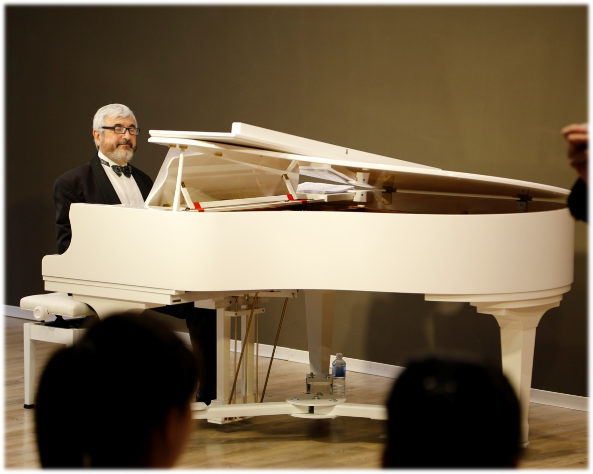

大學是一個人邁入專業的開端，但知識可以專精，生命卻必須寬廣，通識教育正是培養開闊胸襟與美好性靈的平台。中原通識教育中心期望在四大學類課程與豐富多元藝文活動的推引之下，師生皆能定、靜、安、慮，最後得到心之所嚮所往。即使在險阻的路上也能安步當車、穩若泰山。並期許師生躬身自省，達到「日新又新，止於至善」之圓滿全人境界。
探討生命的意義與價值判斷的形上思考，著重於宗教信仰、靈性關懷、生命意義與價值判斷等基本素養。 例：宗教哲學、人生哲學、價值判斷與分析、生命與品格典範等課程。
著眼於理解人類社會中之群體現象與互動原則，關注公民素養、社會關懷、歷史思維與多元文化等基本素養。 例：生活社會學、當代人權議題、法律與現代生活、文化思想史等課程。
致力於加深個人科學思辨能力與永續關懷，重視自然與科學、科技與文明等基本素養。 例：自然科學導論、科技跨領域課程與永續發展等課程。
藉由孕育個人主觀經驗而產生深度生命意涵，致力於情意與美感、溝通與表達等基本素養 例：文學經典閱讀、語文與修辭、藝術鑑賞與自我管理等課程。

除了課堂的知識，幾乎每星期都有多采多姿的通識活動，像是音樂、戲劇、各種演講、表演等，學生可自由選擇參加，沉浸在人文藝術的美好氛圍下，開拓心靈視野，培養人文素養，從而化育出博雅的情操與胸懷。